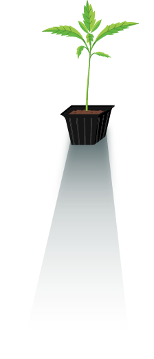
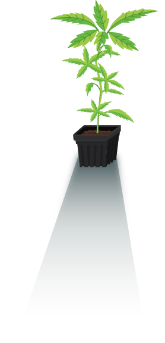
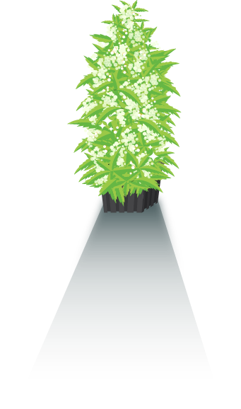
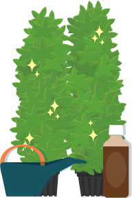

הכל מתחיל בזרע
לגדל קנאביס זה כיף. כל מה שצריך זה זרע, חלל גידול ולעקוב אחרי הוראות פשוטות. מהר מאוד תקטוף פרחים שמנמנים ודביקים. שימוש בציוד איכותי ותוספי תזונה אורגניים יבטיח את מיצוי הפוטנציאל של הצמח שלך. לחץ על הקישורים למטה כדי ללמוד יותר.
חויות
6pHלחות
70-80%תאורה
18 שעותטמפ’
20-25°ברוך הבא לעולם!
>השלב הראשון בגידול הצמח שלנו הוא ההנבטה. בהנבטה הזרע הרדום מתעורר לחיים ומתחיל במסע המופלא שמסתיים בנשיפת עשן מתקתק. זרע הקנאביס מאוד קל להנבטה, רוב הזרעים ינבטו תוך 4-8 ימים. הנבטה דורשת מינימום מגע עם הזרע כי הנבט הצעיר מכיל את כל מה שהוא צריך כדי להתחיל במסע.
חויות
6pHלחות
60-80%תאורה
18 שעותטמפ’
24-29°פנק אותי, אפנק אותך
צמיחה טובה ובריאה תבטיח פרחים גדולים ועסיסיים. בשלב הצמיחה צריך לפנק את הצמח בתנאים הטובים ביותר כדי שהיא תפנק אותך חזרה. תנאים טובים זה: אור, אויר, מים ואדמה. לחץ על הקישורים למטה כדי ללמוד עוד על התנאים האידאלים.
חויות
6pHלחות
40-50%תאורה
12 שעותטמפ’
24-29°מעניקה אהבה
הצמח היפיפה שלנו מתחיל להתמלא בניצנים שמהר מאוד יהפכו לפרחי ענק מלאים בשמן עסיסי. אין דבר יפה ומרגש יותר מצמח קנאביס בשיא הפריחה. ייבוש ויישון איכותי אחרי הקטיף יבטיח פרחי אליפות
הסט-אפ
קחו חלק בקהילה
לחנות
למגזין
לפייסבוק
לעמותה
לפורום
ותשארו בקשר :-)